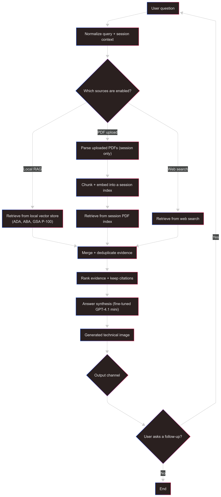

StandardScout is an online building-code copilot powered by LLMs. It combines a local RAG knowledge base for ADA, ABA, and GSA P-100 with optional PDF upload and web search, allowing users to enable one source or combine multiple sources depending on the task. Uploaded PDFs are stored only temporarily for the active session.
StandardScout supports Text and Conversational modes, with no functional difference beyond the UI. Each Q&A generates a simple blueprint-style technical diagram and returns friendly, citation-backed answers designed to support understanding without encouraging overreliance or overtrust.
RAG (local + optional web)ADA + ABA + GSA P-100Session-only PDF uploadsText + Conversational UIBlueprint diagram generationFine-tuned response tone
Project at a glance
What problem it targets
Building codes are dense and cross-referenced. Designers need answers that are fast, accurate, and traceable back to sources.
Goal: reduce search friction while keeping evidence visible
Constraint: avoid hallucinated guidance and overtrust
Audience: architects, students, and AEC practitioners
What I built
Local RAG over ADA, ABA, and GSA P-100 sections
Optional user PDF upload for project-specific documents
Optional web search to bring in public references when needed
Two UI modes (Text and Conversational) with identical logic
Always-on blueprint-style diagram generation per Q&A
Key design principles
Source control: users can toggle retrieval layers on or off
Traceability: answers include citations to the source sections
Calibrated help: responses encourage understanding, not automation bias
Privacy: uploaded PDFs are stored only for the session
Core tech
LLM: OpenAI GPT-4.1 mini (tone-tuned)
Retrieval: local RAG for standard documents
Training: fine-tuning and QLoRA workflow for style control
Output: blueprint-like vector diagram generation
How it works
StandardScout is built around a source-aware workflow. Users decide which evidence streams are active, and the assistant returns an answer that is tied to the activated sources.
Local RAG (always available)
ADA, ABA, and GSA P-100 content indexed for retrieval
Section-level citations returned with each answer
Designed for fast, repeatable lookups of common requirements
Session-only PDF upload (optional)
Users can upload their own code PDFs or project references
Files are stored temporarily for the current session only
Useful for local amendments, addenda, or internal documents
Web search (optional)
Pulls relevant public sources when local references are not enough
Helps cross-check interpretations with official pages
Kept optional so users control external dependency
Answer + diagram generation
Friendly, structured responses with citations
One or two follow-up questions to guide next steps
Blueprint-style diagram generated from the Q&A for quick visual grounding

System overview: local standards retrieval plus optional user documents and web search, followed by citation-backed answers and blueprint-style diagrams.
Interaction modes
Text mode
A compact Q&A interface optimized for quick lookups, skimming citations, and copying requirements into notes.
Same retrieval and generation logic as Conversational mode
Emphasis on concise structure and section references
Useful for checklist-style tasks and verification
Conversational mode
A chat UI for iterative clarification, follow-up questions, and progressive refinement of code decisions.
No functional change beyond UI layout
Supports multi-step reasoning and design trade-off discussion
Designed to keep users in control of the decision process
Text mode: fast lookup with citations and an auto-generated diagram.Conversational mode: multi-turn clarification with identical logic, presented as chat.
Blueprint-style technical diagrams
StandardScout generates a simple technical visual for each Q&A. The style is intentionally minimal, similar to an architectural or engineering manual, using clean vector and blueprint-like linework.
Why diagrams help
Turns abstract constraints into a quick spatial cue
Improves recall and reduces misinterpretation of text-only rules
Supports discussion in studio critique and design review settings
Visual constraints
Simple linework, labels, and proportions
No photorealism, no decorative textures
Intended for explanation, not construction documents
Diagram examples: blueprint-style visuals generated from the Q&A to complement citations and reduce ambiguity.
Tone tuning and response format
I fine-tuned a frontier model (OpenAI GPT-4.1 mini) to keep responses friendly, structured, and consistent. Each answer is designed to be useful in practice while keeping the user oriented to the source sections.
*start of speaking*
The best slope for a wheelchair ramp in a school, according to ADA standards, is a running slope not steeper than 1:12. This means for every inch of vertical rise, there should be at least 12 inches of ramp run. In existing buildings where space is limited, slopes steeper than 1:12 are allowed but must not exceed 1:8, with specific maximum rises depending on the slope. For example, a slope steeper than 1:10 but not steeper than 1:8 can have a maximum rise of 3 inches. To accommodate the widest range of users, ramps should have the least possible running slope.
Do you want to know about the required width or handrail specifications for these ramps? Also, are you interested in slope requirements for other accessible route components like walking surfaces?
*end of speaking*
Related sources:
- ADA:405.2 (Ramps) https://www.ada.gov/law-and-regs/design-standards/2010-stds/#405-ramps
- ADA:405.1 (Ramps) https://www.ada.gov/law-and-regs/design-standards/2010-stds/#405-ramps
- ADA:402.2 (Accessible routes) https://www.ada.gov/law-and-regs/design-standards/2010-stds/#402-accessible--routes
Note: StandardScout is designed to support learning and decision-making. It surfaces citations and encourages verification to reduce automation bias.
Demo on this page
If you deploy StandardScout as a web app (for example, on a subdomain), you can embed the demo here. Replace the src URL with your deployed app URL.
Suggested deployment options
Host a public demo with limited rate and clear disclaimers
Keep PDF uploads session-only and avoid persistent storage
Expose toggles so users can control source selection